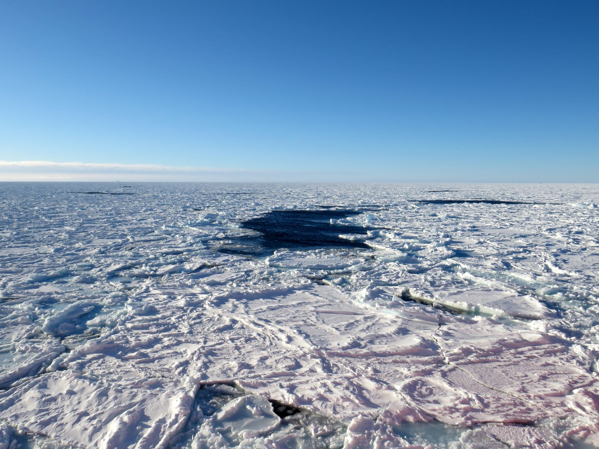

About · the practice and the method
A measurement is a transect, not the Arctic.
That sentence is printed on the first page of every report this practice delivers. It is also the whole business model: small, careful, repeatable measurements, honestly bounded — sold to programmes whose models are only as good as the fractions fed into them.
The scientist
Dr Sanna Lehtonen trained as a physicist and spent her doctoral years on sea-ice optics — how light moves through snow, ice and pond water, and how much of it comes back. Six seasons as a field scientist on other people's campaigns followed, in the Fram Strait and around Svalbard, before she set up this independent practice in Tromsø in 2019. The practice is deliberately two people: Sanna leads the science, and a field technician — recruited per season from the polar-guide and instrument trades — runs instruments, safety and camp. Fieldwork is never done solo. That is a safety rule, and it is also why the rate card prices a team, not a person.
How the measurement works
A survey is a set of transects: straight lines walked across the ice with a GPS log, stopping at fixed intervals to measure. The core instrument is an albedometer — paired pyranometers, one facing the sky, one facing the ice — giving broadband albedo directly as reflected over incoming radiation. A spectral radiometer checks the classes the broadband number blends together. Instruments are calibrated before departure and checked against a reference panel on the ice, because a drifted sensor produces beautiful, wrong fractions. Aerial imagery, where a campaign uses it, is classified into surface classes and then ground-truthed against the walked transects. Repeat visits to the same lines, days apart, are what turn a snapshot into a melt-season record.
Safety, at practice level
Every campaign runs under the permits its region requires, with a written ice-travel and wildlife plan, satellite communications on a fixed check-in schedule, and a named person ashore who holds the plan and the authority to call a pickup. Conditions — ice state, weather, visibility — can stop a survey day, and the decision belongs to the field team, not the schedule. Clients are told this before they sign, not after a day is lost.

The honesty page
Ranges, not points. Albedo varies with sun angle, cloud, wetness and age; a single decimal is a lie of precision. One season is not a trend — a campaign describes the ice it stood on, in the weeks it stood there. A transect is not the Arctic — extrapolation is the client's modelling choice, made visible in the report, never smuggled into the data. And a station the ice destroys is reported as destroyed, with the partial data priced as agreed — see Fieldwork Case 02.
How a field season runs
Scope & permits
The survey box, classes and deliverables are agreed in writing; regional permits and the safety plan are filed before any freight moves. If the honest answer is that the question needs a different season or a bigger team, that is said now, free of charge.
Calibration
Instruments are calibrated, cross-checked against each other and against a reference panel, and the error budget for the campaign is written down — before departure, not reconstructed afterwards.
Transects
Lines are walked on a fixed interval schedule, with class boundaries logged where the surface changes — not only where the plan said it would. Weather days are logged as weather days.
Repeat visits
Key lines are re-walked days later. Melt is a process, not a portrait; the repeat is what lets a programme see a surface class becoming another one.
Delivery, with uncertainty
Dataset and report within the agreed window: fractions, albedo distributions, the error budget, and a plain statement of what the data cannot support. Raw field logs are included — a client should never have to take the processing on trust.
Engagement terms, in plain language
- Booking: a season window is held on a signed engagement letter and a deposit of 25% of the estimated logistics lines — the part that must be committed to carriers early.
- Weather days are billed at the logistics and camp rates only; science day rates are not charged for days the ice or sky closes.
- Data: the delivered dataset and report are licensed to the commissioning programme for its own modelling and publication, with the practice credited as the measurement source. Raw logs are delivered with them.
- Safety stop: the field team may halt or reroute work on safety grounds at any time; halted days are documented in the campaign log the client receives.
- Cancellation: staged by how much logistics has been committed — the schedule is printed in the engagement letter, not negotiated in a crisis.